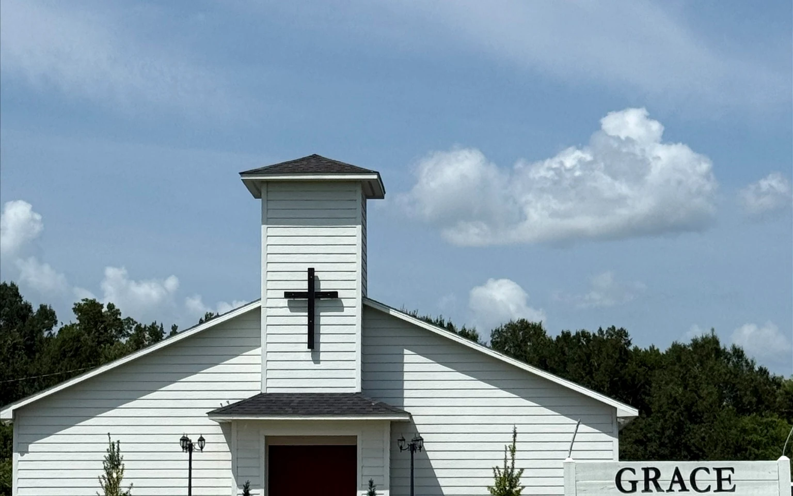

Join us Sunday
11:00 AM
Sunday worship service with Bible-centered preaching and Christian fellowship.
Sunday Service at 11:00 AM
Looking for a Bible-centered church in Houma? Join a welcoming church family where you can worship, hear God’s Word, and grow in faith.
Loving JESUS•Loving People•Making Disciples

New here?
There is no dress code and no need to have everything figured out. Come ready to hear Scripture, worship, pray, and meet people who are glad you came.
11:00 AM
Sunday worship service with Bible-centered preaching and Christian fellowship.
Wednesday 6:30 PM
Gather with us midweek for prayer, encouragement, and time in God’s Word.
9775 East Park Avenue
Houma, LA 70363
A church family in Houma
Pastor Irby Fitch and the Grace Baptist Church family invite you to worship the Lord, learn from His Word, and build relationships that encourage real faith in everyday life.
Church calendar
See the current church calendar below. Schedule changes and new announcements are also posted on Facebook.
View the latest updates on Facebook →The gift of eternal life
We would like to share with you the free gift of eternal life offered through Jesus Christ. The Bible says, “That ye may know that ye have eternal life” (1 John 5:13). Do you know for sure, without a doubt, that you are going to Heaven when you die? Here is how you can know:
Sin is anything we do that is wrong. According to Romans 3:23, “All have sinned, and come short of the glory of God.” We come short of Heaven because we have sinned.
Whether a person has sinned little or a lot, sin carries a penalty. Revelation 20:14 describes the second death, and Romans 6:23 says, “For the wages of sin is death.”
The good news is that Jesus paid our sin debt through His death, burial, and resurrection. Romans 5:8 says, “But God commendeth his love toward us, in that, while we were yet sinners, Christ died for us.” Eternal life is offered as a free gift through Christ alone.
Romans 10:9 says, “That if thou shalt confess with thy mouth the Lord Jesus, and shalt believe in thine heart that God hath raised him from the dead, thou shalt be saved.” Salvation is received by placing your faith in Jesus Christ.
We would be honored to talk with you. Send Grace Baptist Church a message or visit a service to speak with Pastor Irby Fitch about salvation and faith in Jesus.
Come see us
Grace Baptist Church serves Houma and the surrounding Terrebonne Parish community with Bible-centered worship, prayer, and fellowship.